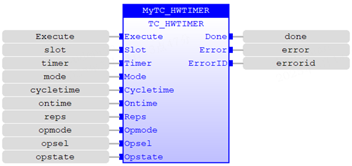
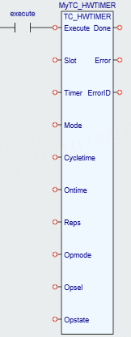

Motion Function.
The TC_HWTIMER command turns ON/OFF a digital output or enable output of an axis for a specified length of ‘cycleTime’ (microseconds) in mode 1 or ‘onTime’ (microseconds) in mode 2 within the overall on/off time ‘cycleTime’.
Note that the internal FPGA timer resolution is 10 µs so the requested time will be divided by 10 thus effectively truncating any remainder less than 10 µs e.g. 27 µs will be interpreted as 20 µs. The user should also consider the rise/fall times of digital outputs, for highest performance then enable output selection should be used.
When using modes 1 or 2 you must use an ATYPE with an enable output.
This command is only supported on controllers that have the correct FPGA_PROGRAM
|
Execute : BOOL; |
Rising edge requests execution |
||
|
Slot : USINT; |
Slot number |
||
|
Timer : USINT; |
Timer |
||
|
Mode : USINT; |
0 |
Disable timer |
|
|
1 |
Starts timer after which the selected output changes state. |
||
|
2 |
Starts timer after which the selected output changes state and then changes state again at the end of the overall cycle time and repeats for the given number of repetitions. |
||
|
Cycletime : LINT; |
Specifies in microseconds the timer cycle time to be used. For mode 1 this is effectively the ON time. |
||
|
Ontime : LINT; |
Mode 2 only, specifies in microseconds the timer ON time to be used within the overall ‘cycleTime’. |
||
|
Reps : DINT; |
Mode 2 only, specified how many repetitions of the ‘cycleTime’ sequence are required. |
||
|
Opmode : DINT;
|
0 |
Indicates that a digital output is to be controlled. |
|
|
1 |
Indicates that a Enable output output is to be controlled. |
||
|
2 |
Indicates that a digital output and enable output output are to be controlled. These are only available in fixed pairs: axis 0 + Digital Output 8 axis 1 + Digital Output 9 axis 2 + Digital Output 10 axis 3 + Digital Output 11 axis 4 + Digital Output 12 |
||
|
Opsel : DINT; |
For opMode=0 this selects which digital output is to be controlled; valid range is 8..15. For opMode=1 this selects which axis enable output (0..4) is to be controlled; valid range is 0..4. For opMode=2 this selects which digital output and axis enable output is to be controlled; valid range is 0..4 which is interpreted as 8..12 for the corresponding digital output. |
||
|
Opstate : DINT; |
Initial state of selected output, ON or OFF. |
||
|
Done : BOOL; |
TRUE when function has completed normally |
|
Error : BOOL; |
TRUE if a program error is detected |
|
ErrorID : UINT; |
Returned error number |
When the execute input changes from FALSE to TRUE (rising edge), the function block tries to write the timing to the FPGA timer, and the output indicates the corresponding setting state.
When the input parameter is dissatisfied with the corresponding relationship in the above table, the error output is set and the error id number 19 is returned.
For the Error ID reference, see the Trio Programming error list.
MyTC_HWTIMER(Execute:= (BOOL), Slot:= (USINT), Timer:= (USINT), Mode:= (USINT), Cycletime:= (LINT), Ontime:= (LINT), Reps:= (DINT), Opmode:= (DINT), Opsel:= (DINT), Opstate:= (DINT));
Done:= MyTC_HWTIMER.Done;
Error:= MyTC_HWTIMER.Error;
ErrorID:= MyTC_HWTIMER.ErrorID;


Not available.
TrioBasic Error List